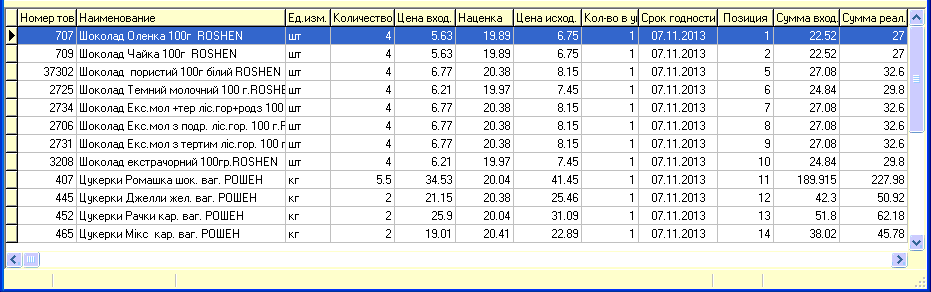
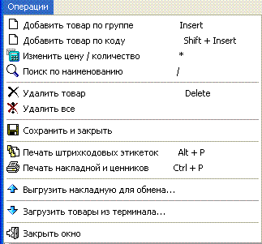
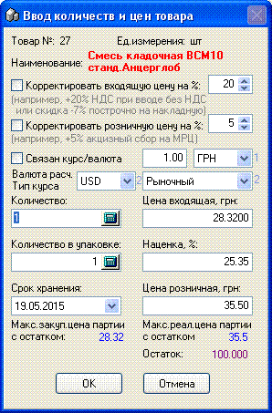

После заполнения заголовка документа далее мы должны приходовать товар и, поскольку, товара и накладных обычно достаточно много - эффективно работать в основном при помощи клавиатуры, подсказка какие сочетания клавиш используются приведена в меню приходной накладной.
- 
- Добавить товар в приходную накладную можно либо
по штрихкоду, либо по локальному коду, введенному вручную. Первый вариант
наиболее быстрый - Вы считываете штрихкод сканером и если он есть в
базе данных товаров, то автоматически откроется форма добавления товара в
накладную (см.ниже), если же такой штрихкод отсутствует, то будет
выдано соответствующее предупреждение и в зависимости от настроек (см.
раздел "Сервис/Настройки/Накладные") откроется форма добавления нового
товара и в нее сразу занесется прочитанный штрихкод.
- Второй вариант - добавление по локальному
коду/наименованию (используется для весового товара или для такого на
котором нет штрихкода) - можно разделить на два подварианта: первый (горячая
клавиша Insert) - добавление через товарную группу - при выборе этого
варианта пользователю будет показан список товарных групп, он может набрать
номер товарной группы на цифровой клавиатуре и нажать клавишу Enter (или
добавить новую товарную группу - см. раздел "Товарные группы"), затем ему
откроется список товаров данной группы, где он перейдет к нужному товару и
нажмет Enter и появится форма добавления товара в накладную (см. ниже). Если
товар новый и его в базе данных нет, то прямо в товарном списке можно
добавить новый код товара (например, скопировав старый товар, см. раздел
"Справочник товаров"). Без входа в список товарных групп используйте
комбинацию клавиш (Shift + Insert ("шифт" держим "инсерт"
нажимаем)).
- 
- Обязательными к заполнению являются поля
количества товара, его входящей и розничной цены. Наценка проставляется
автоматически в зависимости от настроек на товарную группу, конкретный товар
в группе или что Вы сами поставите в соответствующем окошке. Перейдя к
кнопке ОК и нажав ее кнопкой Enter позиция будет занесена в
накладную.
- Опция "Корректировать входящую цену на
%:". По возможности необходимо получать накладные от поставщиков с
колонкой "Цена с НДС". Если же Вам поступает накладная в которой есть только
"Цена без НДС", тогда установите в форме добавления товара в накладную
птичку "Умножать входящую цену на %" и в окошко входящей цены вносите
цену без НДС также как она занесена в Вашу накладную поставщика, после
перехода к следующему окошку эта цена автоматически умножится на процент,
указанный в напротив данной опции (например, 20% для НДС). Не
забудьте снять эту птичку при начале прихода товара в следующую накладную,
если в ней Вы будете вносить товары уже в ценах с НДС - чтобы лишний раз не
умножать на этот процент.
- Другой пример: цены указаны правильные, но без
учета скидки, которая указана в конце накладной. В таком случае, укажите
отрицательное число скидки в данном окошке, например, -7%.
- Опция "Корректировать розничную цену на
%:". Аналогично предыдущей опции, срабатывает при установленной
птичке и при ручном вводе цены в окошко "Цена розничная, грн". Цена при этом
увеличивается на указанный напротив соответствующий процент. Используется,
например, с ценой МРЦ (максимальная рекомендованная цена) с целью ее
фиксированного увеличения на размер акцизного сбора. Округление третьего
знака после запятой до второго производится с округлением в меньшую
сторону, независимо от полученного числа, например, 17.587, будет округлено
до 17.58 (согласно текущих рекомендаций ГФС Украины для акцизного
сбора).
- .
- В случае, если в настройках выбрано отображение
и ведение валютной привязки товара, то в форме становятся видимыми:
- - флажек "Связан
курс/валюта" с курсом и валютой - если
флажек установлен, то считается, что цена вводится в валюте, поэтому
она будет автоматически умножаться на курс, указанный в соответствующем
окошке, справа от флажка. Значения берутся из карточки контрагента, а если
там не проставлено или контрагент в накладной еще не выбран, то курс и
валюта берется из: в случае типа курса "форвардный" - из последней партии
этого товара; в случае остальных типов курса - из справочника курсов
валют из хронологически самого нового курса доллара США.
- - валюта расчета и тип курса
- эти данные берутся из карточки этого товара.
- Внизу окна (при установке в настройках, на
вкладке "Накладные" соответствующих опций) выводятся цены закупочная и
розничная (максимальные из имеющих остаток >0 партий или из последней
партии), а также остаток товара на данном складе (выбранном в заголовке
накладной). Если штрифт зачеркнутый - значит остатка на данном складе по
этому товару нет.